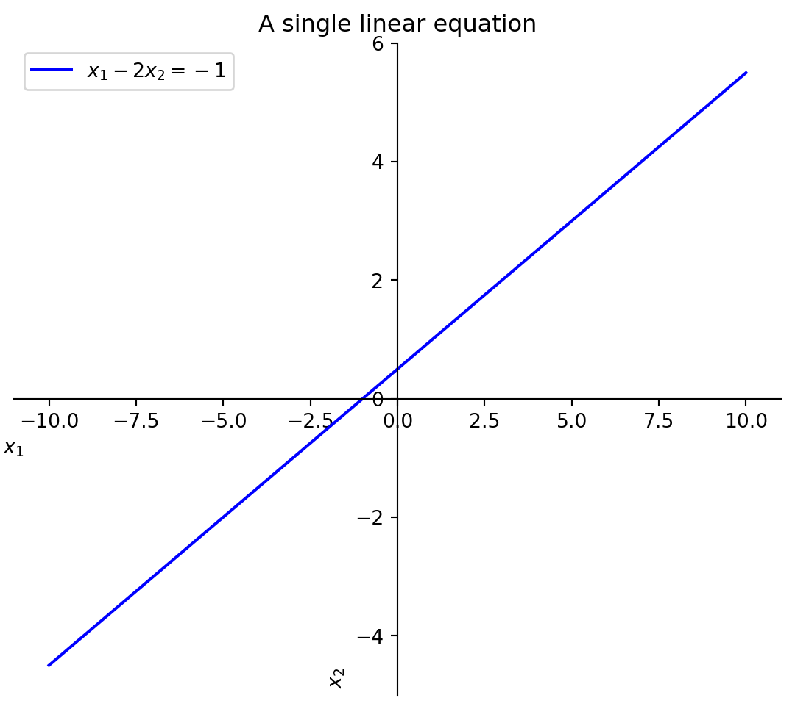
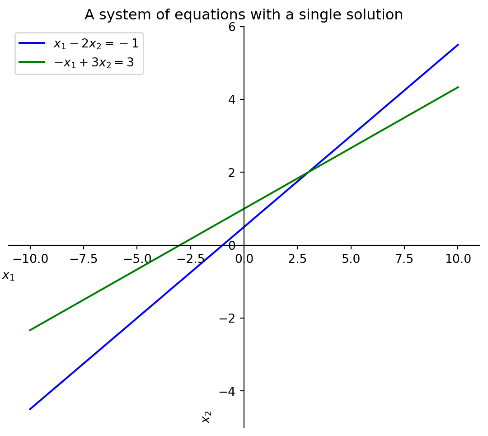
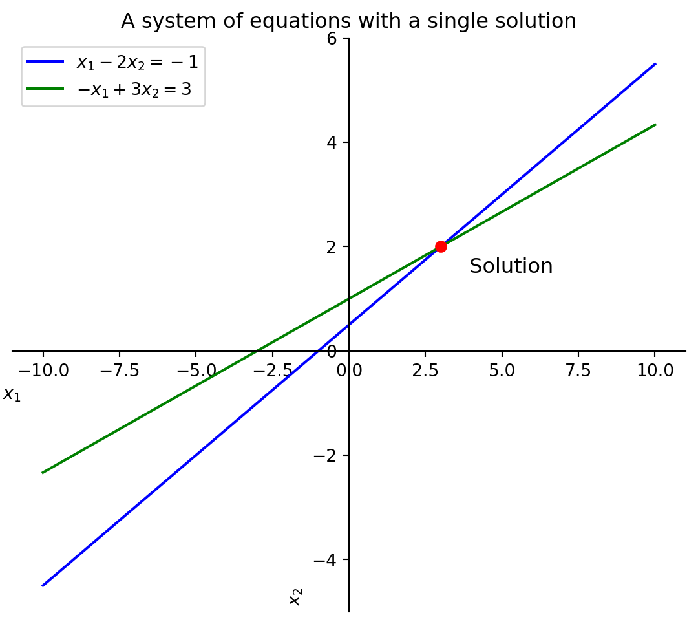

import sympy as spimport matplotlib.pyplot as pltimport numpy as np# Declare variablesx1, x2 = sp.symbols('x_1 x_2')# Define the equationequation_1 = sp.Eq(x1 -2*x2, -1)graph_eq1 = sp.solve(equation_1, x2)[0]# Generate data for plottingx1_vals = np.linspace(-10, 10, 400)graph_eq1_lambdified = sp.lambdify(x1, graph_eq1)y1_vals = graph_eq1_lambdified(x1_vals)# Plottingfig, ax = plt.subplots(figsize=(7, 6))# Title and labelsax.set_title('A single linear equation')ax.set_xlabel('$x_1$ ')ax.set_ylabel('$x_2$ ')# Plot the equationax.plot(x1_vals, y1_vals, label='$x_1 - 2x_2 = -1$', color='blue')# Move the left and bottom spines to x = 0 and y = 0, respectivelyax.spines['left'].set_position('zero')ax.spines['bottom'].set_position('zero')ax.spines['right'].set_color('none')ax.spines['top'].set_color('none')# Add legend and gridax.legend()plt.show()

Definition of a linear equation
A linear equation in the variables \(x_1, x_2, \ldots, x_n\) is an equation that can be written in the form
\[
a_1x_1 + a_2x_2 + \cdots + a_nx_n = b
\]
where \(b\) and the coefficients \(a_1, a_2, \ldots, a_n\) are real or complex numbers. The subscript \(n\) may be any positive integer.
Take the following system of linear equations: \[
\begin{cases}
&x_1 &- 2x_2 &= -1\\
-&x_1 &+ 3x_2 &= 3
\end{cases}
\]
If we plot these equations on a graph, we can see that they intersect at a single point. This point is the solution to the system of equations.
Code
import sympy as spimport matplotlib.pyplot as pltimport numpy as npx1, x2 = sp.symbols('x_1 x_2')equation_1 = sp.Eq(x1 -2*x2, -1)graph_eq1 = sp.solve(equation_1, x2)[0]equation_2 = sp.Eq(-x1 +3*x2, 3)graph_eq2 = sp.solve(equation_2, x2)[0]# Generate data for plottingx1_vals = np.linspace(-10, 10, 400)graph_eq1_lambdified = sp.lambdify(x1, graph_eq1)graph_eq2_lambdified = sp.lambdify(x1, graph_eq2)y1_vals = graph_eq1_lambdified(x1_vals)y2_vals = graph_eq2_lambdified(x1_vals)# Plottingfig, ax = plt.subplots(figsize=(7, 6))ax.set_title('A system of equations with a single solution')ax.set_xlabel('$x_1$ ')ax.set_ylabel('$x_2$ ')# Plot the equationsax.plot(x1_vals, y1_vals, label='$x_1 - 2x_2 = -1$', color='blue')ax.plot(x1_vals, y2_vals, label='$-x_1 + 3x_2 = 3$', color='green')# Move the left and bottom spines to x = 0 and y = 0, respectivelyax.spines['left'].set_position('zero')ax.spines['bottom'].set_position('zero')ax.spines['right'].set_color('none')ax.spines['top'].set_color('none')# Add legend and gridax.legend()plt.show()

Definition of a system of linear equations
A system of linear equations (or a linear system) is a collection of one or more linear equations involving the same variables- say \(x_1, x_2, \ldots, x_n\). An example is
The above system has two equations and two variables where \(x_1, x_2\) are the variables.
The equations above have only one solution since they intersect at a single point.
Code
from IPython.display import Markdownsolution = sp.solve((equation_1, equation_2), (x1, x2))Markdown(f'$$\n{sp.latex(solution)}\n$$')
\[
\left\{ x_{1} : 3, \ x_{2} : 2\right\}
\]
Code
import sympy as spimport matplotlib.pyplot as pltimport numpy as npx1, x2 = sp.symbols('x_1 x_2')equation_1 = sp.Eq(x1 -2*x2, -1)graph_eq1 = sp.solve(equation_1, x2)[0]equation_2 = sp.Eq(-x1 +3*x2, 3)graph_eq2 = sp.solve(equation_2, x2)[0]# Generate data for plottingx1_vals = np.linspace(-10, 10, 400)graph_eq1_lambdified = sp.lambdify(x1, graph_eq1)graph_eq2_lambdified = sp.lambdify(x1, graph_eq2)y1_vals = graph_eq1_lambdified(x1_vals)y2_vals = graph_eq2_lambdified(x1_vals)# Plottingfig, ax = plt.subplots(figsize=(7, 6))ax.set_title('A system of equations with a single solution')ax.set_xlabel('$x_1$ ')ax.set_ylabel('$x_2$ ')# Plot the equationsax.plot(x1_vals, y1_vals, label='$x_1 - 2x_2 = -1$', color='blue')ax.plot(x1_vals, y2_vals, label='$-x_1 + 3x_2 = 3$', color='green')# Move the left and bottom spines to x = 0 and y = 0, respectivelyax.spines['left'].set_position('zero')ax.spines['bottom'].set_position('zero')ax.spines['right'].set_color('none')ax.spines['top'].set_color('none')# Plot the solutionsolution = sp.solve((equation_1, equation_2), (x1, x2))solution_x1 = solution[x1]solution_x2 = solution[x2]ax.scatter([solution_x1], [solution_x2], color='red', zorder=3) ax.text(solution_x1+.5, solution_x2-.5, ' Solution', fontsize=12)# Add legend and gridax.legend()plt.show()

Definition of a solution
A solution of a linear system is a list of numbers (\(s_1, s_2, \ldots, s_n\)) that makes each equation a true statement when the values \(s_1, s_2, \ldots, s_n\) are substituted for \(x_1, x_2, \ldots, x_n\), respectively.
For example, the list of numbers, \((3,2)\), is a solution of the system above because, when the values \(3,2\) are substituted for \(x_1, x_2\), respectively, both equations are a true statement.
The above list, \((3,2)\), is the solution to the system of equations because it is the only list of numbers that makes both equations true. When we substitute \(3\) and \(2\) for \(x_1\) and \(x_2\) in the first equation, both equations turn out to be true!
If we plot these equations on a graph, we can see that they are parallel and never intersect. This means that there is no solution to this system of equations.
Code
import sympy as spimport matplotlib.pyplot as pltimport numpy as npx1, x2 = sp.symbols('x_1 x_2')# Define the equationsequation_1 = sp.Eq(x1 -2*x2, -1)graph_eq1 = sp.solve(equation_1, x2)[0]equation_2 = sp.Eq(-x1 +2*x2, 3)graph_eq2 = sp.solve(equation_2, x2)[0]# Generate data for plottingx1_vals = np.linspace(-10, 10, 400)graph_eq1_lambdified = sp.lambdify(x1, graph_eq1)graph_eq2_lambdified = sp.lambdify(x1, graph_eq2)y1_vals = graph_eq1_lambdified(x1_vals)y2_vals = graph_eq2_lambdified(x1_vals)# Plottingfig, ax = plt.subplots(figsize=(7, 6))ax.set_title('A system of equations with no solution')ax.set_xlabel('$x_1$ ')ax.set_ylabel('$x_2$ ')# Plot the equationsax.plot(x1_vals, y1_vals, label='$x_1 - 2x_2 = -1$', color='blue')ax.plot(x1_vals, y2_vals, label='$-x_1 + 2x_2 = 3$', color='green')# Move the left and bottom spines to x = 0 and y = 0, respectivelyax.spines['left'].set_position('zero')ax.spines['bottom'].set_position('zero')ax.spines['right'].set_color('none')ax.spines['top'].set_color('none')# Add legend and gridax.legend()plt.show()
If we plot these equations on a graph, we can see that they are the same line. This means that there are an infinite number of solutions to this system of equations.
Code
import sympy as spimport matplotlib.pyplot as pltimport numpy as npx1, x2 = sp.symbols('x_1 x_2')# Define the equationsequation_1 = sp.Eq(x1 -2*x2, -1)graph_eq1 = sp.solve(equation_1, x2)[0]equation_2 = sp.Eq(-x1 +2*x2, 1)graph_eq2 = sp.solve(equation_2, x2)[0]# Generate data for plottingx1_vals = np.linspace(-10, 10, 400)graph_eq1_lambdified = sp.lambdify(x1, graph_eq1)graph_eq2_lambdified = sp.lambdify(x1, graph_eq2)y1_vals = graph_eq1_lambdified(x1_vals)y2_vals = graph_eq2_lambdified(x1_vals)# Plottingfig, ax = plt.subplots(figsize=(7, 6))ax.set_title('A system of equations with infinite solutions')ax.set_xlabel('$x_1$ ')ax.set_ylabel('$x_2$ ')# Plot the equationsax.plot(x1_vals, y1_vals, label='$x_1 - 2x_2 = -1$', color='blue')ax.plot(x1_vals, y2_vals, label='$-x_1 + 2x_2 = 1$', color='green', linestyle='dashed')# Move the left and bottom spines to x = 0 and y = 0, respectivelyax.spines['left'].set_position('zero')ax.spines['bottom'].set_position('zero')ax.spines['right'].set_color('none')ax.spines['top'].set_color('none')# Add legend and gridax.legend()plt.show()
Tip
A system of linear equations has
no solution, or
exactly one solution, or
infinitely many solutions.
Matrix Notation
Converting a system of linear equations to matrix form
The essential information of a linear system can be recorded compactly in a rectangular array called a matrix.
The following matrix is called the augmented matrix of the system, it contains the coefficients of the variables left of the equals sign and the constants right of the equals sign (separated by a vertical line):
The size of a matrix tells how many rows and columns it has. The augmented matrix below has 3 rows and 4 columns and is called a \(3 \times 4\) (read “3 by 4”) matrix.
If m and n are positive integers, an m n matrix is a rectangular array of numbers with m rows and n columns. (The number of rows always comes first.) Matrix notation will simplify the calculations in the examples that follow
Tip
In matrix notation:
\(m\) is the number of rows
\(n\) is the number of columns
A matrix has a few different “special” forms. Two specific forms are the row echelon form and the reduced row echelon form. These forms are useful because they make it easy to solve systems of linear equations. Below we will build up to these forms by discussing the elements of a matrix, types of forms, and the elementary row operations that are used to reduce a matrix to these forms.
There are three types of elementary row operations:
Swap the positions of two rows.
\[
R_i \leftrightarrow R_j
\]
Multiply a row by a non-zero scalar.
\[
kR_i \rightarrow R_i
\]
Add or subtract the multiple of one row to another row.
\[
kR_i + R_j \rightarrow R_j
\]
The Row Reduction Algorithm
The row reduction algorithm is a method for solving systems of linear equations. It is based on the idea that if two systems of equations have the same solution, then the augmented matrices of those systems are row equivalent. This means that the two matrices can be transformed into each other by a sequence of elementary row operations. The row reduction algorithm is used to transform a matrix into row echelon form or reduced row echelon form.
The Forward Phase
The forward phase of the row reduction algorithm is used to reduce a matrix to row echelon form. The steps are as follows:
Write the augmented matrix of the system of equations.
Begin with the leftmost nonzero column. This is a pivot column. The pivot position is at the top. Select a nonzero entry in the pivot column as a pivot. If necessary, interchange rows to move this entry into the pivot position
Use row replacement operations to create zeros in all positions below the pivot
Assuming all the entries under the last pivot is zero, we can now ignore the row containing the pivot position and cover all rows, if any, above it. Apply steps 1-3 to the remaining submatrix. Repeat the process until there are no more nonzero rows to modify.
Step 2 states: Begin with the leftmost nonzero column. This is a pivot column. The pivot position is at the top. Select a nonzero entry in the pivot column as a pivot. If necessary, interchange rows to move this entry into the pivot position.
Since the first entry in \(R_1\) is a zero, we need to swap it with a row where the first entry is not a zero. We can swap \(R_1\) with \(R_2\) or \(R_3\).
The bottom left number \(3\) in \(R_3\) needs fixing since it is a non-zero entry below the pivot that we’re working with. We can do the elementary row operation: Add or subtract the multiple of one row to another row to fix this. \[
kR_i + R_j \rightarrow R_j
\]
\[
\text{where } k = -1, i = 1, \text{ and } j = 3
\]
Step 4 states: Assuming all the entries under the last pivot is zero, we can now ignore the row containing the pivot position and cover all rows, if any, above it. Apply steps 1-3 to the remaining submatrix. Repeat the process until there are no more nonzero rows to modify.
Below, we can see that all the entries under the last pivot are zero, so we can ignore the row containing the pivot position and cover all rows, if any, above it.
Note that depending on step 2, we could have swapped \(R_1\) with \(R_3\) instead of \(R_1\) with \(R_2\). This would have resulted in a different matrix
The Backwards Phase
The backwards phase of the row reduction algorithm is used to reduce a matrix in row echelon form to reduced row echelon form. The reduced row echelon form of a matrix is unique. This means that there is only one reduced row echelon form for a given matrix. This is not true for row echelon form. A matrix can have many different row echelon forms. The steps are as follows:
Beginning with the rightmost pivot and working upward and to the left, create zeros above each pivot. If a pivot is not 1, make it 1 by a scaling operation.
Step five says: Beginning with the rightmost pivot and working upward and to the left, create zeros above each pivot. If a pivot is not 1, make it 1 by a scaling operation.
Below is the matrix from the previous example in row echelon form. Currently the only pivots are 3 and 3. We can make the rightmost pivot 1 by dividing the row by 3.
We can see that the system is consistent because the last equation is \(0x_3 = 0\) which is always true. Therefore, the system has infinitely many solutions.
We can see that the system is inconsistent because the last equation is \(0x_3 = 2\) which is impossible. No value of \(x_3\) will make this equation true. Therefore, the system has no solution.
Existence and Uniqueness Question
The two fundamental questions about a linear system are:
Is the system consistent; that is, does at least one solution exist?
If a solution exists, is it the only one; that is, is the solution unique
A linear system is consistent if and only if the rightmost column of the augmented matrix is not a pivot column—that is, if and only if an echelon form of the augmented matrix has no row of the form
\[
\left[\begin{array}{cccc|c}
0 & \cdots & 0 & 0 & b
\end{array}\right]
\;\;\;\;\;\;\;\text{where } b \neq 0
\]
If a linear system is consistent, then the solution set contains either (i) a unique solution, when there are no free variables, or (ii) infinitely many solutions, when there is at least one free variable.
A framework for thinking about vectors
One dimension
Imagine a number line. A point on the number line is a number. This number line is in one dimensional space.
Code
import plotly.graph_objects as gox_values =list(range(-100, 101))fig = go.Figure()(fig.add_trace( go.Scatter( x=x_values, y=[0] *len(x_values), mode="markers+text", marker=dict(size=8, color='red'), text=x_values, textposition="bottom center")) .add_shape( go.layout.Shape(type="line", x0=min(x_values), x1=max(x_values), y0=0, y1=0, line=dict( color="Black", width=3))) .update_xaxes( tickvals=[], showline=True, linewidth=2, linecolor='black', showgrid=False, zeroline=False, ticks="",range=[-10, 10]) .update_yaxes( tickvals=[], showline=False, showgrid=False, zeroline=False, ticks="") .update_layout( showlegend=False, plot_bgcolor='rgba(0,0,0,0)', paper_bgcolor='rgba(0,0,0,0)', yaxis_title="", height=250, # Set the height of the plot annotations=[dict( x=0, y=-0.2, xref="x", yref="y", text="drag me left and right ⬇️ (x_1)", # Custom text for the x-axis showarrow=False)]))fig.show()
A point in a 1 dimensional space is represented by a single number. The number specifies the location of the point along the (\(x_1\)) axis. In other words, there is only one direction in which the point can move (left and right).
Example: \(1\)
Two dimension
Code
import plotly.express as pximport pandas as pd# Create an empty DataFramedf = pd.DataFrame({'drag me ($x_1$)': [], 'drag me ($x_2$)': []})# Create the scatter plotfig =(px .scatter(df, x='drag me ($x_1$)', y='drag me ($x_1$)') .update_xaxes(range=[-30, 30], zeroline=True, zerolinewidth=2, zerolinecolor='Black', tickvals=list(range(-100, 101, 10))) .update_yaxes(range=[-30, 30], zeroline=True, zerolinewidth=2, zerolinecolor='Black', tickvals=list(range(-100, 101, 10))))fig.show()
A point in a 2 dimensional space is represented by two numbers. The first number specifies the location of the point along the first, \(x_1\), axis and the second number specifies the location of the point along the second, \(x_2\), axis. In other words, there are two independent directions in which the point can move (left and right, up and down).
Example: \(\begin{bmatrix}1\\2\end{bmatrix}\)
Three dimension
Code
import pandas as pdimport plotly.express as pxx_values = [i for i inrange(-100, 101)]y_values = [i for i inrange(-100, 101)]z_values = [i for i inrange(-100, 101)]df_x = pd.DataFrame({'x1': x_values, 'x2': [0]*len(x_values), 'x3': [0]*len(x_values)})df_y = pd.DataFrame({'x1': [0]*len(y_values), 'x2': y_values, 'x3': [0]*len(y_values)})df_z = pd.DataFrame({'x1': [0]*len(z_values), 'x2': [0]*len(z_values), 'x3': z_values})df = pd.concat([df_x, df_y, df_z], ignore_index=True)fig = px.scatter_3d(df, x='x1', y='x2', z='x3')fig.show()
A point in a 3 dimensional space is represented by three numbers. The first number specifies the location of the point along the first, \(x_1\), axis, the second number specifies the location of the point along the second, \(x_2\), axis, and the third number specifies the location of the point along the third, \(x_3\), axis. In other words, there are three independent directions in which the point can move (left and right, up and down, in and out).
Example: \(\begin{bmatrix}1\\2\\3\end{bmatrix}\)
Vectors in \(\mathbb{R}^2\)
A matrix with only one column is called a column vector, or simply a vector. Examples of vectors with two entries are
The set of all vectors with two entries is denoted by \(\mathbb{R}^2\). The set of all vectors with three entries is denoted by \(\mathbb{R}^3\). In general, the set of all vectors with \(n\) entries is denoted by \(\mathbb{R}^n\).
Operations with vectors
Equalities
Two vectors \(\bf{u}\) and \(\bf{v}\) in \(\mathbb{R}^2\) are equal if and only if \(u_1 = v_1\) and \(u_2 = v_2\). In other words, two vectors are equal if and only if their corresponding entries are equal.
Given a vector \(\bf{u}\) in \(\mathbb{R}^2\) and a scalar \(c\), their product \(c\bf{u}\) is obtained by multiplying each entry of \(\bf{u}\) by \(c\):
A linear combination is a sum of scalar multiples of vectors. The scalars are called the weights.
Given vectors \(\mathbf{v}_1, \mathbf{v}_2, ..., \mathbf{v}_p\) in \(\mathbb{R}^n\) and weights (scalars) \(c_1, c_2, ..., c_p\), the vector, \(\mathbf{y}\), is a linear combination of \(\mathbf{v}_1, \mathbf{v}_2, ..., \mathbf{v}_p\) if:
Each weight (scalar) \(c_i\) scales the vector \(\mathbf{v}_i\), and the sum of all these scaled vectors is the resulting linear combination.
Example
Imagine vectors, \(\mathbf{v}_1\) and \(\mathbf{v}_2\), in \(\mathbb{R}^2\) where \(\mathbf{v}_1 = \begin{bmatrix}-1\\2\end{bmatrix}\) and \(\mathbf{v}_2 = \begin{bmatrix}2\\0\end{bmatrix}\).
Now, imagine vector, \(\mathbf{y}\), in \(\mathbb{R}^2\) where \(\mathbf{y} = \begin{bmatrix}2\\2\end{bmatrix}\).
We can see that \(\mathbf{y}\) is a linear combination of \(\mathbf{v}_1\) and \(\mathbf{v}_2\) because \(\mathbf{y}\) can be written as:
In particular, \(\mathbf{b}\) can be generated by a linear combination of \(\mathbf{a}_1, \ldots, \mathbf{a}_n\) if and only if there exists a solution to the linear system corresponding to the matrix (5).
One of the key ideas in linear algebra is to study the set of all vectors that can be generated or written as a linear combination of a fixed set \(\{\mathbf{v}_1, \ldots, \mathbf{v}_p\}\) of vectors.
If \(\mathbf{v}_1, \ldots, \mathbf{v}_p\) are in \(\mathbb{R}^n\), then the set of all linear combinations of \(\mathbf{v}_1, \ldots, \mathbf{v}_p\) is denoted by \(\text{Span}\{\mathbf{v}_1, \ldots, \mathbf{v}_p\}\) and is called the subset of \(\mathbb{R}^n\) spanned (or generated) by \(\mathbf{v}_1, \ldots, \mathbf{v}_p\). That is, \(\text{Span}\{\mathbf{v}_1, \ldots, \mathbf{v}_p\}\) is the collection of all vectors that can be written in the form
The span of a set of vectors is the collection of all possible linear combinations of those vectors. It represents all the vectors that can be reached or generated by scaling and combining the original set of vectors.
Check out this interactive graph to see how the span of vectors changes as the vectors are scaled and combined.
Definition
The span of vectors \(\mathbf{v}_1, \mathbf{v}_2, ..., \mathbf{v}_n\) is denoted as \(\text{Span}\{\mathbf{v}_1, \mathbf{v}_2, \dots, \mathbf{v}_n\}\) and includes every vector that can be written in the form:
Consider vectors \(\mathbf{u} = \begin{bmatrix}1\\0\end{bmatrix}\) and \(\mathbf{v} = \begin{bmatrix}0\\1\end{bmatrix}\). The span of \(\mathbf{u}\) and \(\mathbf{v}\) is all of \(\mathbb{R}^2\) because any vector in \(\mathbb{R}^2\) can be expressed as a linear combination of \(\mathbf{u}\) and \(\mathbf{v}\).
For instance, the vector \(\begin{bmatrix}3\\4\end{bmatrix}\) can be obtained as:
A fundamental idea in linear algebra is to view a linear combination of vectors as the product of a matrix and a vector.
Definition of a Linear Combination
If \(\mathbf{A}\) is an \(m \times n\) matrix, with columns \(\mathbf{a}_1, ..., \mathbf{a}_n\), and if \(\mathbf{x}\) is in \(\mathbb{R}^n\), then the product of \(\mathbf{A}\) and \(\mathbf{x}\), denoted by \(\mathbf{A}\mathbf{x}\), is the linear combination of the columns of \(\mathbf{A}\) using the corresponding entries in \(\mathbf{x}\) as weights; that is,
Just like a linear combination of vectors, the product of a matrix and a vector is a linear combination of the columns of the matrix using the corresponding entries in the vector as weights.
In other words, the matrix equation \(\mathbf{A}\mathbf{x} = \mathbf{b}\) can be thought of as a linear combination of the columns of \(\mathbf{A}\) using the corresponding entries in \(\mathbf{x}\) as weights.
Thus, the equation, \(\mathbf{A}\mathbf{x} = \mathbf{b}\), has a solution if and only if \(\mathbf{b}\) is a linear combination of the columns of \(\mathbf{A}\).
Let \(A\) be an \((n\times m)\) matrix where \(n\leq m\)
If there are pivots in every column of \(A\):
The columns of A make up a linearly independent set
The equation, \(A\vec{x}=\vec{0}\) has only the trivial solution
The linear transformation \(\vec{x} \rightarrow A\vec{x}\) is one-to-one, or injective
The rows of \(A\) span \(\mathbb{R}^n\)
There exists an \((n\times m)\) matrix \(C\) such that \(CA=I_n\)
Let \(A\) be an \((n\times m)\) matrix where \(n\geq m\)
If there are pivots in every row of \(A\):
The rows of \(A\) make up a linearly independent set
The equation, \(A\vec{x}=\vec{b}\) has at least one solution for every \(\vec{b}\) in \(\mathbb{R}^m\)
The linear transformation \(\vec{x} \rightarrow A\vec{x}\) maps \(\mathbb{R}^m\)onto\(\mathbb{R}^n\), or is surjective
The columns of \(A\) span \(\mathbb{R}^m\)
There exists an \((n\times m)\) matrix \(D\) such that \(AD=I_m\)
Let \(A\) be an \((n\times n)\) matrix
If there are pivots in every row and column of \(A\), then both groups of statements above are true, and:
A is an invertible matrix
A is row equivalent to \(I_n\)
A has \(n\) pivot positions
A’s left inverse and right inverse are the same matrix
The columns of \(A\) form a basis of \(\mathbb{R}^n\)
The column space, \(\text{Col}\{A\}\), is \(\mathbb{R}^n\)
The rank of \(A = \text{Rank}\{A\} = \text{dim}\{\text{Col}\{A\}\} = n\)
The nullity of \(A = \text{Nullity}\{A\} = \text{dim}\{\text{Nul}\{A\}\} = 0\)